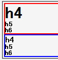

見出し要素（h1, h2, h3, h4, h5, h6）でfont-sizeプロパティが指定されていない場合、親要素のfont-sizeの値ではなくbodyまたはhtml要素のfont-sizeの値に対する相対値が算出されてしまう。ただし、h4要素だけは親要素のfont-sizeの値を継承する。
<div style="font-size:2em; border:1px solid red;"> <h4 style="margin:0;">h4</h4> <h5 style="margin:0;">h5</h5> <h6 style="margin:0;">h6</h5> </div> <div style="border:1px solid blue;"> <h4 style="margin:0;">h4</h4> <h5 style="margin:0;">h5</h5> <h6 style="margin:0;">h6</h5> </div>
上のh4, h5, h6要素は親要素のfont-sizeを指定した場合、下のh4, h5, h6要素は親要素のfont-sizeを指定しない場合の例です。なお、上下に間延びしてしまうのでh4〜h6要素のマージンを0にしています。
Moz1.0.2での表示（標準モード）
Opera7.02での表示（標準モード）
見出し要素でfont-sizeプロパティを指定することでこのバグを回避できます。
<div style="font-size:2em;"> <h4 style="margin:0; font-size:1em;">h4</h4> <h5 style="margin:0; font-size:0.8em;">h5</h5> <h6 style="margin:0; font-size:0.7em;">h6</h5> </div>
Opera7.02では標準・互換モードともに不具合の発生が確認されました。